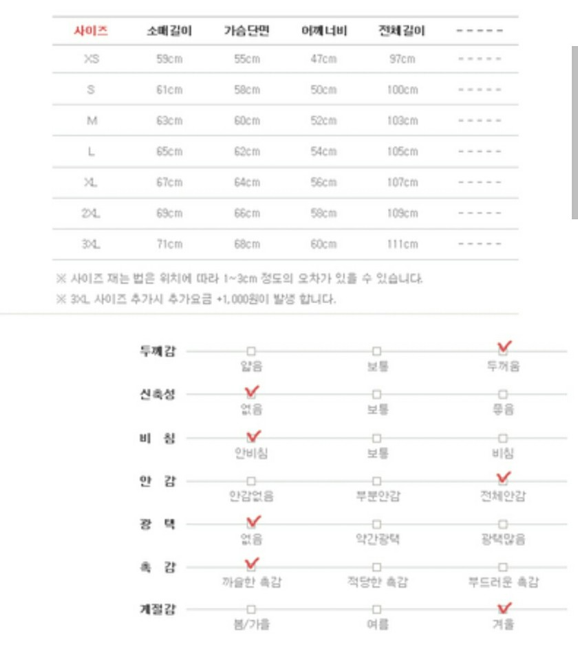

접수는 9월 7일 부터입니다.
가격또한 방문후 대략적으로 확정 가능할것 같으나 최종적으로는 접수 인원이 모인 후 확정될것 같습니다.
진행사항은 최대한 빠르게 업데이트 하겠습니다!!
--------------------------------------------------------
팀 팩토리
라이덱스-타슬란(일반), 옥스포드(고급)
때가 덜 타는건 고급형
2XS~4XL(추가금 X)
오리털은 일체형 불가능
일반 7oz 고급8oz
자수 벌당 8000~10000
일반형 벌당 55000, 고급형 벌당 60000
자주 묻는 질문
Q. 돕바안의 충전재가 뭔가요?
A. 솜입니다.



라이덱스-타슬란(일반), 옥스포드(고급)
때가 덜 타는건 고급형
2XS~4XL(추가금 X)
오리털은 일체형 불가능
일반 7oz 고급8oz
자수 벌당 8000~10000
일반형 벌당 55000, 고급형 벌당 60000
Q. 돕바안의 충전재가 뭔가요?
A. 솜입니다.